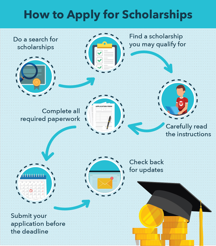

About Scholarship
What is Scholarship?
Money given (as by a college) to a student to help pay for further education.
How to apply for Scholarship?
How to find Scholarship?
Scholarship chances
Getting scholarship
7%
Getting enough of scholarships to cover 100% of costs
5%
Getting upwards of $25,000 in scholarships
0.2%
Powered by w3.css